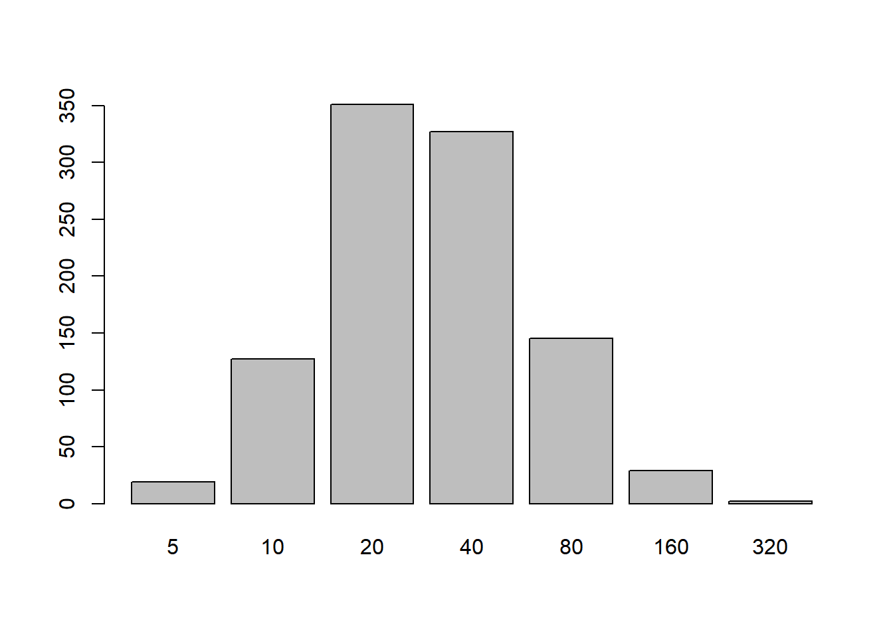

So I work with a lot of immunological titer data, particularly HAI titers for flu. And I’ve recently needed to work out how to do some simulations. So this post will cover the generative model I’ve developed and show some examples, while hopefully explaining each step in a way. Mostly so my adviser can tell me what he thinks I did wrong.
Author
Zane Billings
Published
July 25, 2023
A sample histogram showing what exciting results are to come!
So this will probably be a shorter post, but it will hopefully be the first in a series of posts about some immunological data problems I’m working on right now. In this post, I’ll give a brief background on immunological titer data, a short explanation of why I care, and then I’ll walk through the generative model I’ve adopted for simulating titer data. I plan to explain the steps of my model and show how each part works both in math and in R code. Of course I will have to make some simplifying assumptions, but I’ll try to explain what those are and what any alternatives might be.
Background
I’m currently interested in antigenic distance, and particularly how it relates to the immunogenicity of the flu vaccine. However, there are some unique challenges in trying to quantify the immunogenicity of a given seasonal vaccine because of how often flu mutates. In the process of developing better methods for this task, we need to validate our method in situations where we know what the expected answer should be, and then we can compare the performance in simulated settings to the real-world results we get.
So, I need to be able to simulate titer data. Specifically, I’m interested in HAI titer data, but there’s no reason this couldn’t be adapted to work on other measurements. HAI titers are a bit peculiar, because they start at 10 and then each successive measurement doubles, i.e., 10, 20, 40, 80, etc. A titer of 10 is the limit of detection (LoD) of the assay, and any value below 10 will be censored! That is, we know the value is below 10, but not quite where. We can further say that we know the value should be 0 or greater, but we will work on the log scale where this constraint is enforced naturally.
So whatever generative model we adapt needs to take on only these values, and needs to have a censoring mechanism. In reality, we know that a given HAI measurement is really interval-censored: if your HAI measurement is 40, what we really know is that your true HAI titer is in the range \([40, 80]\). So, when we generate someone’s titer, it needs to come from an underlying data generating process that can generate any positive titer value, but our observations are flawed. (I think we can then also incorporate the LoD issue into this interval censoring framework but until I can figure that out explicitly they remain conceptually different in my brain.)
Anyways, the last thing I’ll mention before talking about my proposed data generating process is the scale of interest. I’ve already mentioning working on the log scale, but that isn’t 100% accurate. So for the rest of this post (and potentially series), I’ll refer to the natural scale when I’m talking about measures of titers like I discussed before, i.e. 10, 20, 40, and so on. When I refer to the log scale, I specifically mean that we’ll apply the transformation \[g(x) = \log_2 \left(\frac{x}{5}\right)\] to the natural scale variables. Since values at the LoD are typically recoded as 5, and the numbers on the natural scale double consecutively, the values on this transformed scale will start at 0 and increase by 1, e.g. 0, 1, 2, 3, would correspond to the natural scale titers 5, 10, 20, 40.
OK, with that background out of the way I’ll talk about simulating titer data.
Simulation methods
First, I’ll attempt to simulate raw titer data, without including antigenic distance in the simulation. Of course since I care about antigenic distance, eventually that will need to be part of the simulation and that will probably be the next blog post. So we’ll first develop a model to simulate observations of a single titer measurement, and then adapt that in the future.
The outcome we want this simulation to produce is a semi-realistic distribution of titer values with support on the observed measurement space. We adopt the following model, where \(y_i\) is the \(i\)th individual’s measured titer.
\[
\begin{align*}
\log_2 y_i &\sim \mathcal{N}(\mu, \sigma^2) \\
y_i^* &= \begin{cases}
5 & \log_2 y_i < 1 \\
5 \cdot \lfloor 2 ^ {y_i} \rfloor & \log_2 y_i \geq 1
\end{cases}
\end{align*}
\] We adopt the transformation \[
g^{-1}(y) = 5 \cdot 2^{y_i},
\] as previously stated, because the physical limit of detection (LoD) of the HAI assay is \[
10 = 5 \cdot 2 ^ 1
\] and values below this threshold are typically recorded as \(5\). So we know those values are below the LoD, but not what the values are. The distributional parameters \(\mu\), the mean, and \(\sigma^2\), the variance, are unknown to us practically and must be estimated from the data.
Note. I chose a normal distribution for the underlying continuous titer values because it is the easiest distribution to work with. In this framework, \(y_i\) has a (scaled) log-normal distribution. And honestly, things just tend to work out find with the normal distribution. An alternative distribution could be used here, such as the gamma distribution, for a different shape of titer distributions.
Writing R code to sample from this model is simple.
one_titer_sim <-function(N =1e4, seed =370, mean =3, sd =1) {set.seed(seed) sim <- tibble::tibble(# Assume log(titer) is drawn from a normal distributionraw_log_titer =rnorm(N, mean, sd),# If we observe a titer with log(titer) < 1 (LOD), mark it as 0trunc_log_titer =ifelse(raw_log_titer >=1, raw_log_titer, 0),# The assay is dilution based, so we only observe the floor of each# value.rounded_titer =floor(trunc_log_titer),# Now final observed titer is equal to this transformation.sim_titer =5*2^ rounded_titer ) |> dplyr::arrange(raw_log_titer)}out <-one_titer_sim(1000, mean =3, sd =1)#plot(out$raw_log_titer, out$trunc_log_titer)#points(out$raw_log_titer, out$rounded_titer, col = "blue")barplot(table(out$sim_titer))

In the above plot, you can see the result of 1000 simulations, where \(\mu = 3\) and \(\sigma = \sigma^2 = 1\). Notably, while the mean was specified as \(3\) (an observed titer of \(40\)), the mode of the distribution is at \(20\) instead.
We can also notice that the observed mean is biased, estimated at \(2.55\) on the scale of \(y_i\) in the above model (\(29.28\) on the natural scale). A stackexchange post suggested that as long as \(\sigma^2\) is “not small” (suggested as \(\sigma^2 \geq 1\)here), \(\mu \approx \bar{x} + \frac{1}{2}\) is a good approximation to the mean (on the log scale), which is close to what we observed.
Conclusion
So I think that was a pretty simple probability model, but I think the hard part will be dealing with the unique challenges that censoring entails. In the next step, I’ll incorporate antigenic distance into the generative model by replacing the mean with a linear function. After that, we can dive into methods of estimation, using Stan models. But overall I’m pretty happy with this generative model, though I always welcome thoughts and comments on how it can be improved.